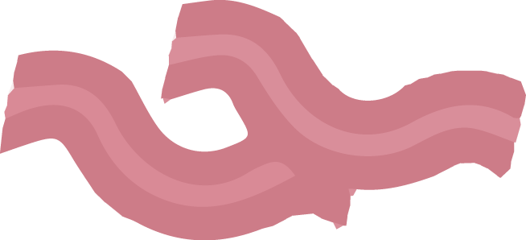
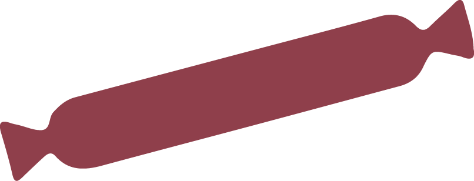
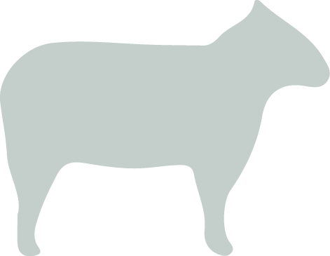

WHICH FOODS CONTAIN MORE POLYAMINES?
Acording to the World Health Organitzation one every 33 cancers is ascribed to red or processed meat. In the Carcinogenic Classification Groups ranking processed meats are in the first risk group, and red meats in the second.


